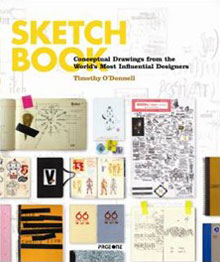
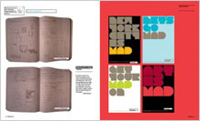
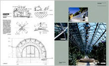

Sketchbook
Design:Timothy O¡¯Donnell
Measures:280mm×230mm
Binding:191pp., Hardback
color photographs,
Text in English
Date:Mar 2009
ISBN:978-981-245-802-5
Subject:Sketch / Graphic Design
Publisher:PageOne (Singapore)
Description:
This book explores influential designers¡¯ sketchbooks as a truer reflection of a designer¡¯s thought processes, preoccupations, and problem-solving strategies than can be had by simply viewing finished projects. Highly personal and idiosyncratic, sketchbooks offer an arena for unstructured exploration, a space free from all budgetary and client constraints. Visually arresting objects in their own right, this book aims to elevate sketches from mere ephemera to important documents where the reader can glean valuable insight into the creative process, and apply it to their own practices.
Price: £¤ 270 RMB
(Only for Chinese market)


